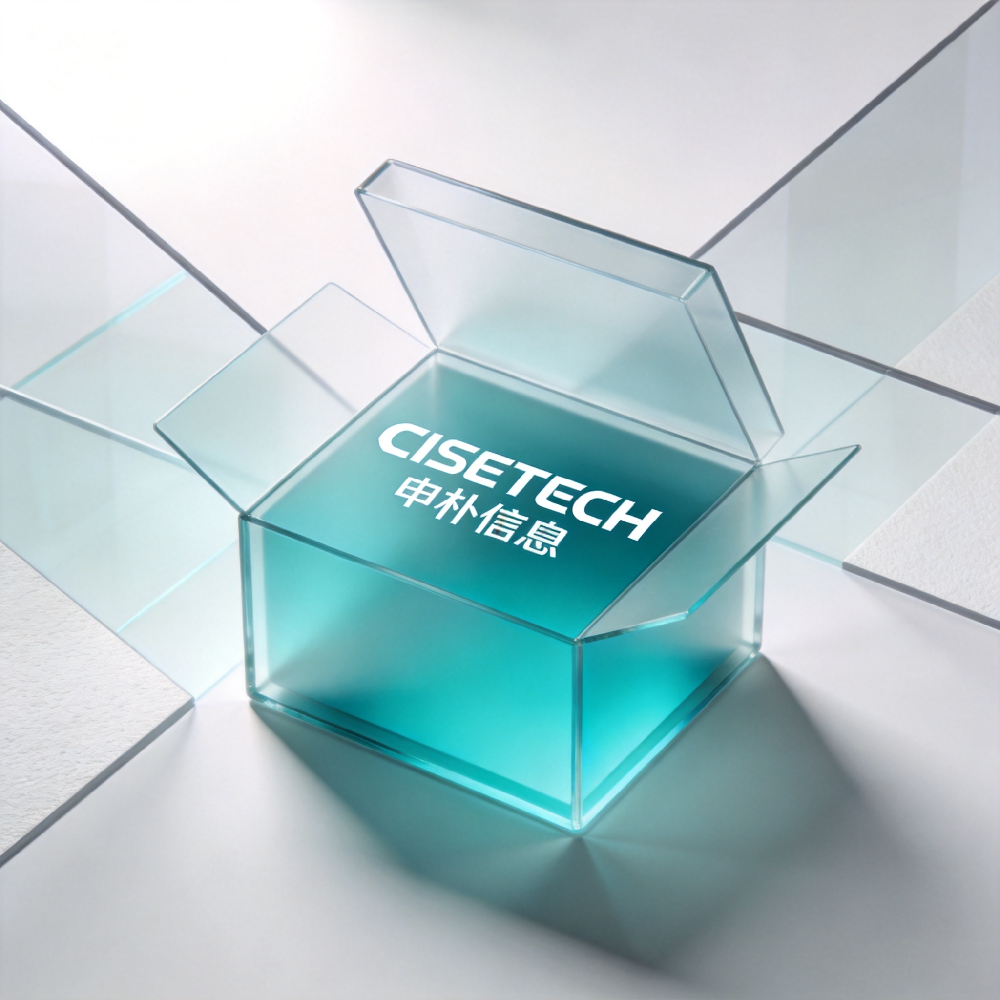

About Us
以 "AI 即未来" 为信仰，我们是全球领先的 AI 智能科技综合服务商。打造 AI 基础设施 + 模型服务 + 智能体平台 + 行业应用一体化 AI 解决方案，深度融合大数据、区块链等技术，构建覆盖保险、银行、金融科技、互联网、新型制造等行业的数转智改方案矩阵，全方位驱动千行百业的 AI 智能化转型。
作为 CMMI5 全球顶级认证企业，拥有200+IP，汇聚 500+AI 技术专家及 3000+ 各领域人才，服务超 40 + 保险巨头、30 + 银行、15 + 互联网、15 + 新型制造头部企业，成功落地各类AI应用承建标杆案例。
未来，我们将持续深化 AI 与实体经济的融合创新，以全链路数智化能力推动千行百业转型升级，让 AI 智能科技普惠每一个角落。


从香港辐射海外
智启数字新程，重塑产业未来
客户第一，服务优先，申信达诚，朴心进取
16年砥砺前行，持续创新发展
遍布全国的服务网络，为您提供本地化支持
内蒙古呼和浩特市
北京市海淀区
辽宁省大连市高新区
山东省海阳市
山西省临汾市
宁夏银川市
陕西省西安市高新区
河南省郑州市金水区
江苏省南京市建邺区
江苏省苏州市工业园区
上海市浦东新区
浙江省杭州市滨江区
浙江省桐乡市乌镇
浙江省丽水市
四川省成都市高新区
重庆市奉节县
重庆市渝北区
湖北省武汉市洪山区
安徽省合肥市蜀山区
福建省福州市鼓楼区
福建省漳州市
福建省厦门市思明区
江西省赣州市
湖南省长沙市岳麓区
广东省韶关市
广东省广州市天河区
广东省肇庆市
广东省深圳市南山区
广东省东莞市南城区
广东省珠海市香洲区
广东省湛江市
香港特别行政区
海南省海口市龙华区
全国布局，专业交付 - 在11个交付基地为您提供服务